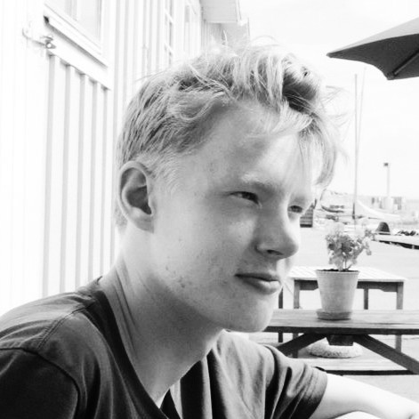

Svante Södergård
Hej och välkommen till min första inlämningsuppgift i kursen Frontend. Denna sida innehåller bl. a. lite bilder från projekt från tidigare kurser. Till höger ser du en bild på mig. Bilden är tagen på svenska västkusten. I bakgrunden kan du se ett bord. På bordet står deten blomma. Jag vill minnas att den var grön. Hoppas denna hemsida är intressant för just er.